急にRubyについて学ぶ
まずは
Javaとの対比が一番わかりやすいのでいったん対比を書く
| # | 項目 | Java | Ruby | 備考 |
|---|---|---|---|---|
| 1 | 実行 | java | ruby | ruby {rubyfile} |
| 2 | webフレームワーク | spring ほか | rails | ? |
| 3 | テストフレームワーク | junit | minitest test-unit rspec | ruby {testfile} |
| 4 | ビルドツール | maven gradle | rake | rake {task} タスクの書き方は後述。 直接実行する場合は、グローバルインストールされていないといけない。 プロジェクト個別にインストールしたrakeを使う場合は以下のような感じ bundle exec rake {task} |
| 5 | 依存解決 | bundle | bundle install bundle install –path gems でプロジェクト個別に依存を収集できる | |
| 6 | 静的解析 | findBugs | ruboCop |
いろいろ使い方
シンタックス回り
変数
通常は何も書かずに代入で切るっぽい
variable = 'だいにゅうできるよ';
puts variable;
ローカル変数を作りたければ以下。
@variable = 'ローカル変数！';
puts @variable;
クラスの中でクラス変数を定義したい場合はアットが二つ
class Clazz
@@field = nil;
def method_dayo
@@field = 'フィールドだよ';
puts @@field;
end
end
スクリプトとして使う場合はグローバル変数なんてのもあったね。
$variable = 'ぐろーばるなかんじ';
puts $variable;
ビルド
bundlerだったりrakeだったりminitestだったりとツールがパラパラと存在していて、それぞれ別で実行するのは嫌になる。。。
node周りと同じように、ルートになるツールは何を使うべきか調べてみたけど、どうやらbundlerを使うスタイルが多そう。
（でも、rakeがビルドツールなのだからrakeから全部やりたくなるんだけどできないのか？）
